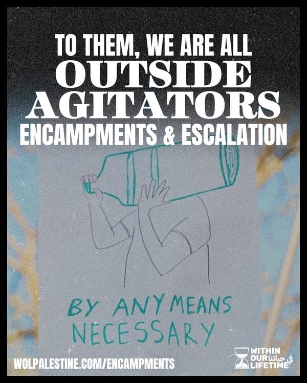
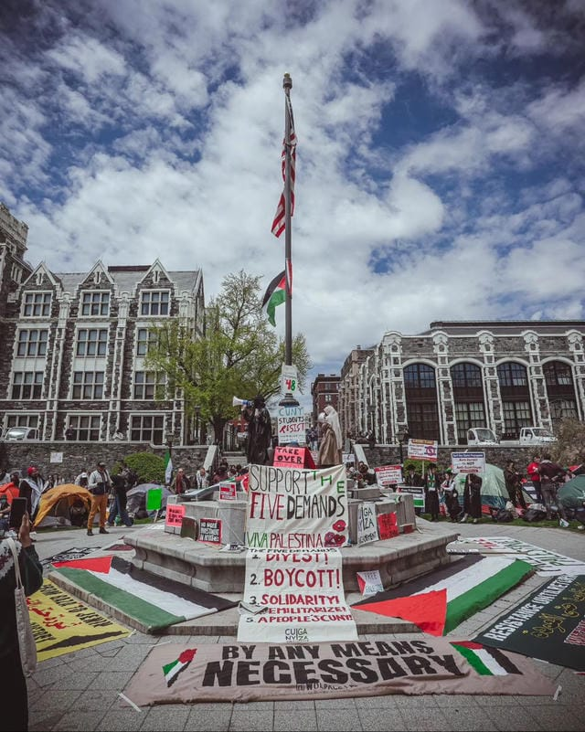
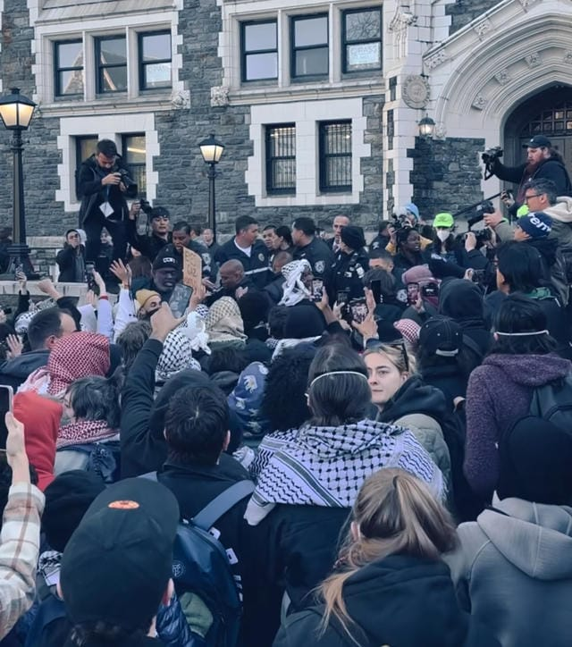

After over 40,000 martyrs, seven months, and 75 years, the movement to Free Palestine in the imperial core has reached a watershed moment. We have been marching, chanting, engaging in mass protest and direct action for decades, trying to show the world that our people in Gaza are worthy of life as they bear witness to 75 years of genocide. Yet it was the steadfastness of the Palestinian people and their resistance forces who won the support of the global majority.
Over 40,000 martyrs and seven months have largely demonstrated that the tactics and strategy of the movement in the imperial core has hit its ceiling. Large marches, milquetoast speeches from celebrities, half-hearted solidarity from organizations that are not committed to our liberation have taken us as far as we can go. None of it has been enough. None of it has stopped the bombs from dropping or filled the stomachs of Palestinians being starved by the zionist entity. In fact, settlers have only grown more brazen in their violence — from the West Bank where they are regularly burning Palestinian homes to Gaza where they are committing unfathomable acts of horror against men, women, and children. Our cause has always been righteous, but now the image is clear to anyone looking that we are facing a monstrous settler colony committed to our annihilation as a people.

Yet, there are glimmers of hope in the belly of the beast. Our first real glimpse was April 15, a call for coordinated yet decentralized action that drove people all over the world to carry out an economic blockade against points of production and logistics networks including ports, bridges, weapons manufacturers, financial institutions and more. The day of action was framed as "a shift from symbolic action" to materially effective action.
Over the past seven months of non-stop mobilization, the repression exerted by police, administrators, and politicians that we collectively have faced in all sectors of life has expanded and intensified. Death threats and doxxing have become the norm for people of conscience since October 7th. Unions have come under attack for expressing simple rhetorical (and not material) solidarity with Palestine. Mobilizations are often indistinguishable from cop riots — with drone surveillance, arrests of youth, and repeated incidents of cops pulling off women's hijabs quickly becoming routine. And students have been doxxed, harassed, suspended, expelled, evicted, and subjected to physical violence for supporting the rights of an exiled people to return to their homeland.
Although the universities, police forces, and politicians intend to force the people into submission with this wave of repression — to force us to accept that this genocide is inevitable and that we must allow it to proceed or else face severe consequences — it has done exactly the opposite. Seven months of this brutal repression have laid clear the task at hand and has forced all of us to become fearless. Protestors are not as frightened by the prospect of arrest as they used to be, students have been doxxed and have no reason to bite their tongues. As we confront zionism and imperialism, we are forced to confront the fact that we are not free at all and that any mobility we have within a dying empire can be stripped away in a heartbeat. So what is there left to do?
The students of the Columbia University Apartheid Divest (CUAD) coalition answered this question on Wednesday, April 17, when they set up the Gaza Solidarity Encampment on campus at 4 AM, insisting that they were not leaving until their demands were met. Columbia administration has shut down the university's SJP and JVP chapters; suspended and evicted students; called the NYPD, FBI, Homeland Security, and even private investigators to surveil organizers; and allowed them to face a violent chemical attack committed by former IOF soldiers with no serious repercussions against the perpetrators. Columbia administration made it so deeply clear to its students that it does not stand with them and that its allegiance fully lies with the violent zionist project.
The struggle at the Gaza Solidarity Encampment has been historic, powerful, and awe-inspiring to today's students across the country and those of 1968, who inspired the idea for a liberated zone on the lawn. CUAD has brought in students from other universities, dozens of organizations, and every day people who want to support what is seen not only as a serious escalation in movement strategy but a model for how the student movement can force power to concede to its demands. In only a few days, encampments have popped up all over the country from Cal Polytech to the City University of New York, from the ivy league to the public university. Within Our Lifetime salutes every student of every Gaza Solidarity Encampment and liberated zone and encourages everyone from all walks of life to plug into your local projects and support them however possible.
There is no further symbolic victory to be gained, there is no more "proving" that the Palestinian liberation struggle is just. There is no institution of power to appeal to, because every institution of power from the UN to the ICJ to our city councils and university administrations are corrupt and rotten to the core. Decades of electoral pandering has produced nothing but sellout politicians who demonize our resistance forces and our student organizing at every opportunity. Years of appealing to the United Nations has produced international court rulings that are fundamentally incapable of stopping the bombs from raining on our people.
What these brave students have shown the world is that there are no allies within enemy institutions, no more appeals to be made, and certainly no more negotiating the terms of our existence and resistance. There is only an enemy to fight and a struggle that seeks victory. What is crucial in sustaining this moment is identifying clearly who our friends and enemies are.
On the morning of the second day of Columbia's Gaza Solidarity Encampment, President Minouche Shefik called on the NYPD to sweep the site and arrest the protestors. This same response was repeated at NYU, UT Austin, USC, Emerson, and more. At the time this statement is written, CUNY students are engaged in a standoff with the NYPD and CUNY Public Safety. On the first day of the CUNY encampment, students and community members successfully pushed CUNY Public Safety out after they attacked those inside with no justification. CUNY Public Safety abducted a member of the encampment on the same day (a teenager), turned her over to the cops, and charged her with a felony for the crime of allegedly spraypainting the ground.

As the movement grows into a new phase, the terms of engagement with these enemies must be made clear. We cannot treat them as anything but hostile to our goals of ending the genocide of the people of Palestine. This is why we have made an effort to study, track, and report on the activities and capabilities of the New York Police Department. If they're willing to throw us in jail and put us in the hospital every night for the egregious crime of using a megaphone without a permit, what would they do if we were on the precipice of truly throwing wrenches in the gears of the ongoing genocide? It is no use chanting "NYPD KKK IDF You're All the Same" if we ignore the role of the US police forces in maintaining the status quo — which, for over 75 years, has included the genocide of our people. We understand the police as a functionary of US imperialism, and we understand that the zionist state wouldn't last a Palestinian summer without the never-ending spigot of military and diplomatic aid provided to it by the US empire. If the police can quash the Palestinian solidarity movement on the streets of the U.S., that ensures that spigot does not have a domestic threat and can continue unabated.
At the same time as we assess who the forces of repression are, we must simultaneously be cautious not to let opportunists co-opt these spaces of revolutionary potential for photo-ops. Already, we have seen a number of individuals — many of whom have explicitly condemned the Palestinian resistance or even support the zionist entity's existence — come and take photos, or even make speeches at the Gaza Solidarity Encampment. In New York, we've seen sell-outs like Alexa Aviles play revolutionary and take pictures at the Columbia encampment a year after helping evict Mexican and Latin American workers from Plaza Proletaria in Sunset Park. We've seen Alexandria Ocasio Cortez tweet in support of the encampments while demonizing "outside agitators" and condemning our resistance fighters in Palestine. Well-known intellectuals get on the mic and admonish us for daring to chant from the river to the sea, and implore us to consider the legitimacy of a settler-colonial state.
They are not our allies and they do not stand in solidarity with any of us. The attempt at co-optation by politicians, celebrities, and nonprofit organizations is a counterinsurgency strategy to de-escalate the encampments, de-fang the movement, and de-mobilize the momentum we have been building for so long.
The movement trips over itself to provide endless trainings, webinars, and infographics on de-escalation tactics to avoid bad press and antagonisms with police, zionist agitators, and university administrators. This is not inherently a bad thing and we are quite aware of the need to avoid pointless confrontation in order to build our camps and consolidate our forces. We ourselves have provided Know Your Rights trainings, for example, and employed this approach in specific protests and conditions. But like everything, we have a choice in what we prioritize and a responsibility to adapt to meet the moment. We need Know Your Rights trainings: but we also need Know Your Enemy trainings. We can choose to prioritize de-escalation trainings, or we can choose to prioritize escalation trainings. We can choose to learn how to build effective barricades, how to link arms most effectively to resist police attacks, or what type of expanding foam works best on the kind of doorknobs present in our universities. This is not rhetoric — this is an urgent need. We will all share the inspiring images coming from Cal Polytech — but who will commit to studying and adapting those lessons to fit our conditions? These questions are a priority if we are serious about turning this movement from one that tries to advance our rhetorical position on solidarity and morality to convince power brokers of the righteousness of our cause, to a movement that becomes a power broker ourselves.
We are inspired by the Cal Polytech students — a student body where a fourth of the students do not have enough food to eat and have experienced homelessness — who were the first in this current period to take a building and fight off the police. We are inspired by the Columbia students who have shown a model on how to re-establish a camp after a police sweep and how to last for days at a time. We are inspired by the Emerson and Emory students who teach us to link arms in rows and build barricades to resist police assaults. We are inspired by the USC students who teach us that a single police car surrounded by hundreds can effectuate a de-arrest. These students are creative and adapt to their conditions and represent a shift in the solidarity movement from one of symbolic power to one that understands tangible power. We call on New Yorkers to learn these lessons and prepare for the next chapter.
As we wrote nearly eight years ago, "the student movement can provide revolutionary leadership to a larger movement if it is integrated among broader progressive struggles to build power for oppressed people. But if instead the student movement is limited either solely to the specific struggles of students (tuition, student resources, etc.), or is isolating students from their communities instead of uniting them, the student movement becomes non-revolutionary or even counter-revolutionary." This has not been more relevant than today, where new student encampments are established every single day.
There are several important lessons to draw from the rejection of the student power line — lessons that have been synthesized decades ago by revolutionaries in the United States and elsewhere, particularly the student movement integrated in the ongoing revolution in the Philippines.
Firstly, we note that it is crucial to keep our focus and demands on Gaza and the ongoing genocide of the Palestinian people. The protest itself can not be the dominating headline. And yet because our analysis of the Palestinian struggle is an internationalist one, part of these demands requires us to make our encampments and organizing relevant to the majority of New Yorkers who are not Palestinian, Arab or Muslim. Our encampments exist in a city that is plagued by displacement, hunger, and state violence. If we limit our encampments to students alone, and on narrow demands that ignore the material context where we live — where our neighbors struggle and die — we are bound to fail. But if we force open the gates of the university, share our struggles, understand we have a common enemy and build our respective capacities to fight them on and off the campus — the universities are ours for the taking.
Secondly, it is more important than ever that we reject the so-called "outside agitator" line thrown at us by the right-wing media, cops, university administration, and so-called progressive forces. As the comrades in Cal Polytech teach us, "the distinction between student and non-student only enforces the gates between the university and its surrounding communities. By rejecting this difference we break open the gates." Emory students in Atlanta have declared "as clearly as possible, we welcome 'outside agitators' to our struggle against the ruthless genocide of the Palestinian people." If we restrict political participation to students themselves, and only them, and turn away those at the gates, we are bound to fail. Students did not win in '68 by turning away the people of Harlem who threatened to storm the gates of Columbia, and neither will we now. In the eyes of our enemies in the belly of the beast, we are all outside agitators.
That brings us to today — April 27, 2024. The CUNY encampment has entered its third day. The City University of New York is the key to New York City. What happens here determines the fate of the student movement in the rest of the City. There are nearly 250,000 CUNY students in New York. Somewhere in the neighborhood of 50,000 New Yorkers work in the university system. CUNY has 25 campuses across 5 boroughs. The vast majority of college students (and their siblings, cousins, neighbors, coworkers...) attending demonstrations for Palestinian liberation do not go to the Ivy Leagues — they go to CUNYs. The high schoolers walking out of their schools for Gaza join the ranks of CUNY senior and community colleges year in and year out. CUNY was free for the vast majority of its existence — and our predecessors fought and won for open admissions — so that every New Yorker could go to CUNY. That all changed when the first freshman CUNY class was majority non-white. Tuition and a restrictive admissions process was soon introduced, and now we find ourselves in a system that is desperately trying to become the UCLA of the East Coast — public in name only — whose prime beneficiaries are out of state middle or upper class students who have no connection to New York or its people. Now turnstiles, public safety officers, Starbucks, tuition hikes, and restrictive admission policies are everywhere you turn on a CUNY campus. Within Our Lifetime, formerly known as NYC Students for Justice in Palestine, was formed specifically out of this reality — Palestinian and Arab New Yorkers in the CUNY system who saw an isolation of the student movement and sought to bring the struggle out of the classroom and into our neighborhoods.
We encourage CUNY students to take stock of their campuses. Who are the progressive forces, who can be won over, and who must be politically isolated? Which buildings on your campus have the most favorable conditions to blockade doors and smuggle in supplies? Will student government and faculty push the administration to call off the cops? What of the student representatives in the Board of Trustees? Will the neighborhood the campus is located in support our struggle? Have we given them a reason to?
We salute the courageous CUNY students, alumni, faculty and community members who brought the struggle to the CUNY system. We are at your service.